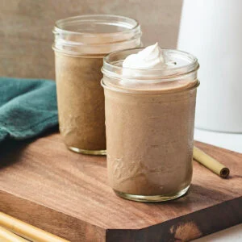
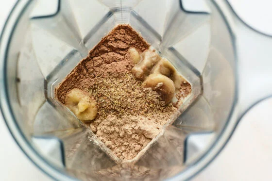
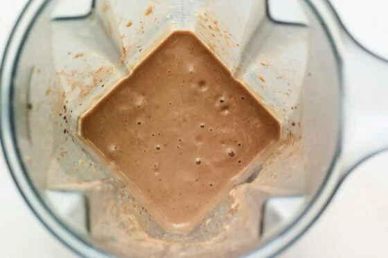

Introduction
Prep time: 5 minutes
Protein shakes are a great way to get that extra protein that you need to build muscle. They are also quite filling and tasty. You can add a little whipped cream on the top to fancy it up.
Ingredients (1 Serving)
- 1 banana in chunks
- 1 scoop of protein powder
- ½ tablespoon of cocoa
- ¾ cup milk of your choice
- Handful of ice
- ½ tablespoon of chia seeds, flax seeds, or coconut flakes (optional)
- Coconut whipped cream (optional)
Instructions
- Add all ingredients into blender except whipped cream.

- Blend until smooth. Add whipped cream on top. (optional)

- Enjoy!
Nutrition (1 Serving)
- Calories: 282kcal
- Fat: 7g
- Saturated Fat: 1g
- Polyunsaturated Fat: 1g
- Monounsaturated Fat: 2g
- Carbohydrates: 34g
- Fibre: 8g
- Sugar: 14g
- Protein: 24g
- Sodium: 587mg
- Potassium: 703mg